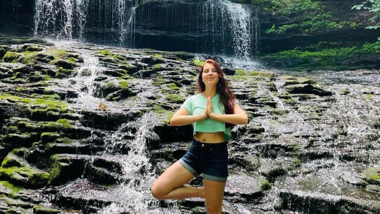

Interests
Apart from being a marketer, I got lots of hobbies and interests – travelling is the biggest passion of mine! In general, I prefer to spend all the time outside in the nature, love mountaineering, tennis, hiking and climbing. In the winter, I am an avid skier and ice skater. Also, I got a PADI certificate, and love exploring the underwater world.
Choosing from mostly indoor activities, I am really keen on yoga, meditation, and learning foreign languages as well as expanding my knowledge of foreign countries.
Here are some photos of my favourite activities
This picture was taken during my biggest life adventure - Tian Shan mountaineering trip in 2019.
This picture was taken during a very nice hike up to McAfee Knob.
This is one of the pictures from the trip to Boston University, these abundance of flags reflects my passion for foreign languages.
Scuba diving is also something I truly enjoy in my free time.
Tennis is an amazing sport, especially if you can play outdoors.

A bit of yoga and meditation in the nature help to reduce the stress from all the b school workload!
Awards & Certifications
-
Coporate Tableau - Certificate
-
Duke University - Digital Media and Marketing Certificate
-
Winner - PepsiCo "Bravo" Awards 2021 for a successful launch of innovative products (BioMax Corners) - Company awards
-
Winner - PepsiCo "Best Cases" 2020 for the excellent digital project with Google - Company awards
-
Finalist - Rome Business Game 2018 - Case Competition
-
Finalist - Oliver Wyman 2017 - Case Competition
-
Finalist - Marketing Go by MVideo 2017 - Case Competition
-
Finalist - Changellenge Russia Cup 2016 - Case Competition
-
Finalist - Unilever Future Leader's League 2016 - Case Competition
-
Winner - Russian All-Russian National Olympiad in Social Sciences 2013 (economics, law, sociology, political science, philosophy)- Country Olympiad